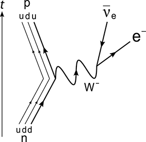

You discovered the W and Z bosons!

The weak interaction is a nuclear process that is responsible, among other things, for β (beta) decay the transformation of neutrons into protons. The weak force is mediated by two bosons called the W and the Z. The W comes in two types: W+ and W−. The Z is neutral and is sometimes represented as Z0.
The W and Z bosons are quite massive and so require powerful accelerators in order to be produced and studied. The Super Proton Synchrotron at CERN was the first machine capable of this, and the UA1 collaboration lead by Carlo Rubbia discovered both particles in 1983. Rubbia along with Simon Van der Meer, whose developments on the accelerator allowed such a machine to be built, were jointly awarded the Nobel Prize in Physics in 1984.